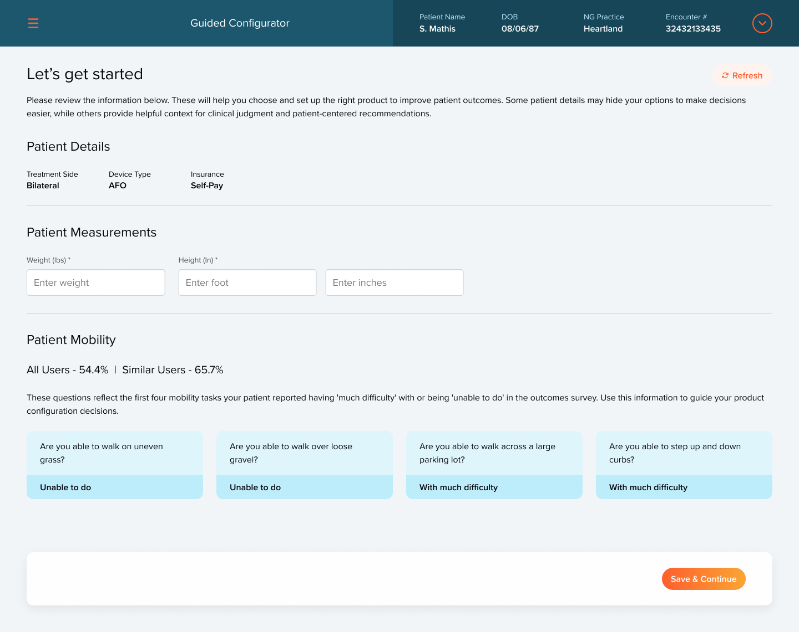

01
Truth
The right device starts with what the patient wants to do again, not with the catalog.
Action
Open every order with the patient. "Let's get started" shows treatment side, device type, and insurance, then the four mobility tasks the patient struggled with most in their outcomes survey, like walking on uneven grass or stepping up a curb. Clinicians configure with those goals in front of them.
